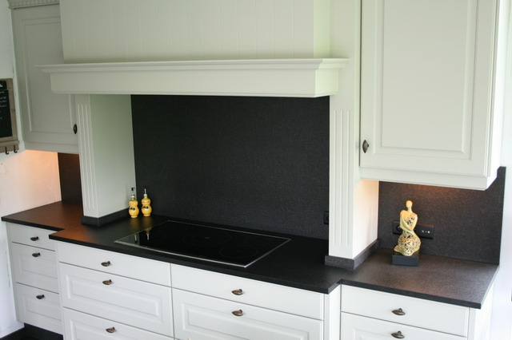
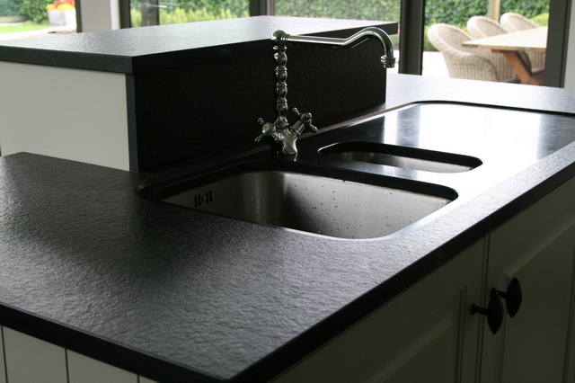
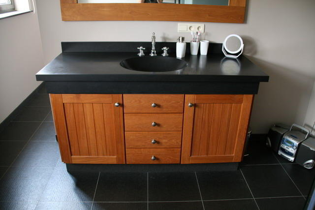
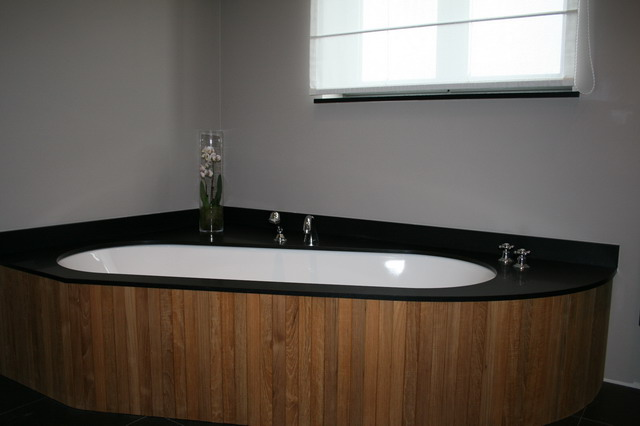
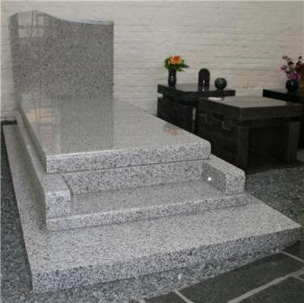

Keukenwerkbladen
Op maat gezaagd, met uitsparingen voor spoelbak, kookplaat en kraan.
Natuursteen Opdebeeck · familiebedrijf in Wilrijk
Keukenwerkbladen, badkamers, tafels, dorpels en grafmonumenten in blauwe steen, graniet en marmer. Wij verwerken de ruwe steen zelf tot het eindproduct.
Ma–vr doorlopend 9–17.30 u · zaterdag op afspraak · Jules Moretuslei 480


5 generaties
Van grafmaker tot maatwerk voor keuken en badkamer
Sinds 1987 specialiseren we ons in maatwerk voor de bouw. Onze troeven zijn blauwe steen en graniet, verwerkt volgens jouw wensen. We werken voor particulieren en in onderaanneming voor aannemers.

Op maat gezaagd, met uitsparingen voor spoelbak, kookplaat en kraan.

Wastafelbladen, badombouwen en tabletten in één steensoort.
Tafels · dorpels · vensterbanken · trappen
Tafels, dorpels en toepassingen buiten, tijdloos en zeer duurzaam.

Zerken, urnen en columbariumplaten, persoonlijk ontworpen.
1
We zoeken met jou de ideale steensoort voor je project.
2
Na je keuze bestellen we de ruwe steen bij een van onze leveranciers.
3
We verwerken de ruwe steen tot het gewenste eindproduct en werken zorgvuldig af.
Kies steen, maten en uitsparingen. Het plan tekent mee. Stuur je keukenplan erbij, dan rekenen we het na en maken we een offerte.
Een plek om in gedachten nog dicht bij je dierbare te zijn. We maken een zerk, urne of columbariumplaat die het leven van je dierbare weerspiegelt. Een uniek en persoonlijk gedenkteken hoeft niet duurder te zijn dan een standaard monument.
Het bedrijf begon in 1912 als grafmaker. Die zorg en dat geduld zitten nog altijd in elk monument.
Bel voor een rustig gesprek1912
Betovergrootvader Opdebeeck start als grafmaker, vooral in graniet.
1987
Naast grafmonumenten gaat het bedrijf zich specialiseren in maatwerk voor de bouw.
2011
Vader en zoon zorgen samen voor de zorgvuldige afwerking. Daniëlle Deelen begeleidt je persoonlijk bij je aankoop.
We werken voor klanten in Wilrijk, Antwerpen, Hoboken, Edegem, Aartselaar, Kontich, Hemiksem en Mortsel, en voor aannemers in de hele regio.
Natuursteen F. Opdebeeck · BTW BE 0430.461.254 · fax 03 825 81 31